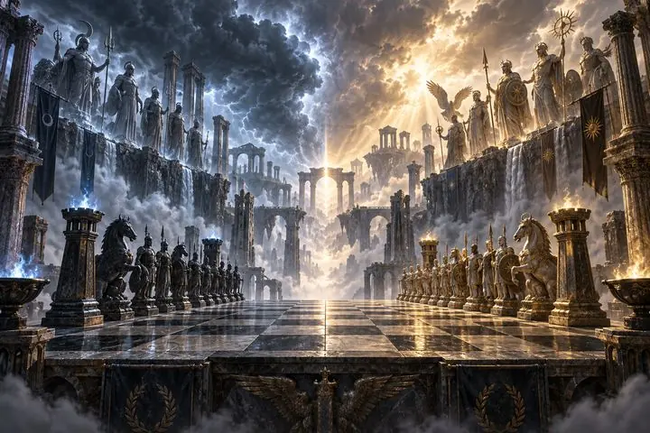
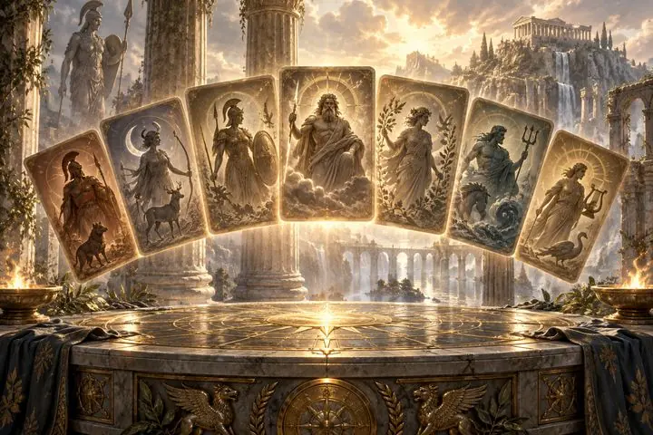
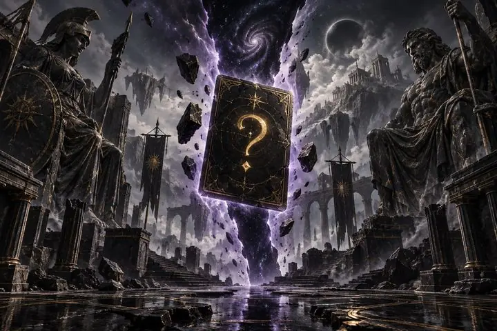
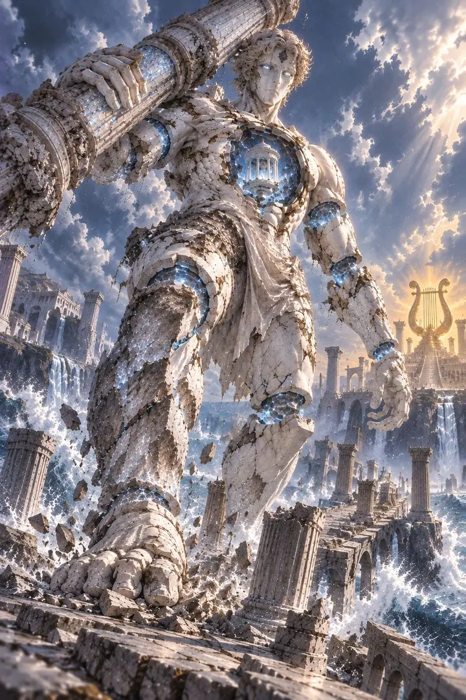
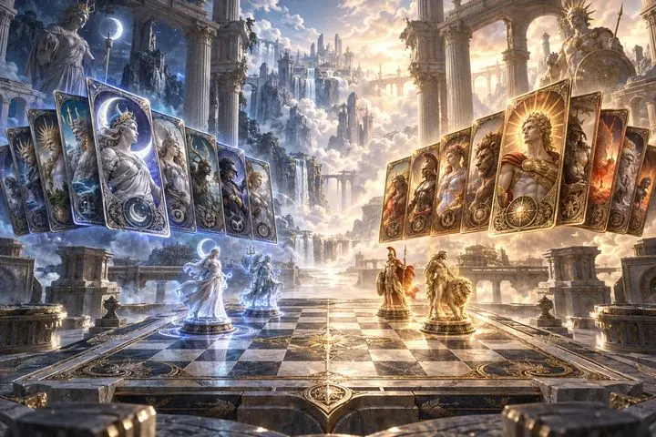

公式サイト公開
『神々の残響』公式サイトを公開しました。五つの神系と全102柱の神格のスキル・セリフを、簡体字・繁体字・日本語・英語で閲覧できます。ゲームはリリースに向けて準備中です。ストアページが公開され次第、ここでお知らせします。
『神々の残響』公式サイトを公開しました。五つの神系と全102柱の神格のスキル・セリフを、簡体字・繁体字・日本語・英語で閲覧できます。ゲームはリリースに向けて準備中です。ストアページが公開され次第、ここでお知らせします。
開発中のテスト版の画面です。製品版では変更される場合があります。
クラシックドラフトから混沌モードまで。一人で練習、ルームコードで友達と、ランクマッチでも。





6桁のルームコードを送るだけで、Mac・Windows・Android の友達がすぐ参加できます。
アリーナとクラシックドラフトの2つのラダー。シルバーからマスターまで。
全神格のスキル・役割・セリフ・ステータスをひと目で。
简体中文・繁體中文・English・日本語。
ゲームはリリースに向けて準備中です。ストアページが公開され次第、ここでお知らせします。